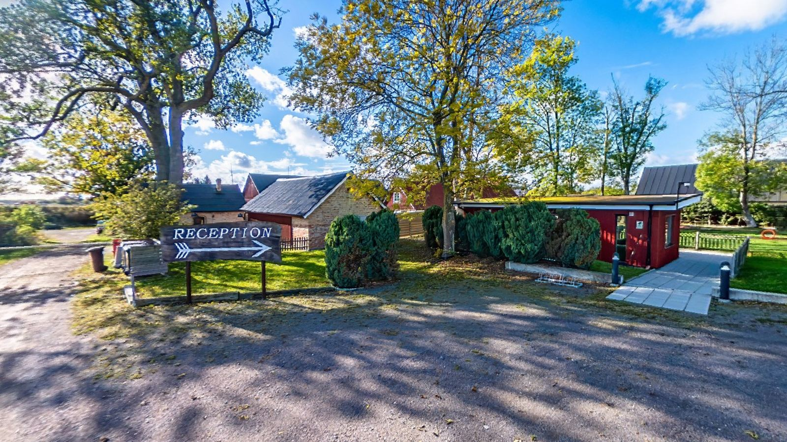

Se deg rundt
Gå rundt på gården
Kikk inn i rommene og festlokalet i 360°, eller fly over eiendommen.

Innkjørselen Her kjører du inn og parkerer. Parkering er gratis for gjester.
Dra i bildet for å se deg rundt. Klikk på ringene i gulvet for å gå videre.


Ovenfra
Fly over Gammeleksgården
Ett minutt over gården, åkrene og E6, med Øresund i bakgrunnen.
Fra lufta
Gården midt i det åpne landskapet